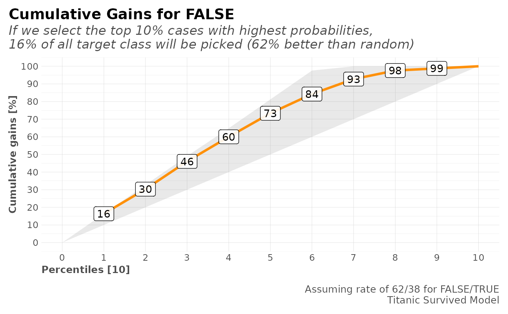
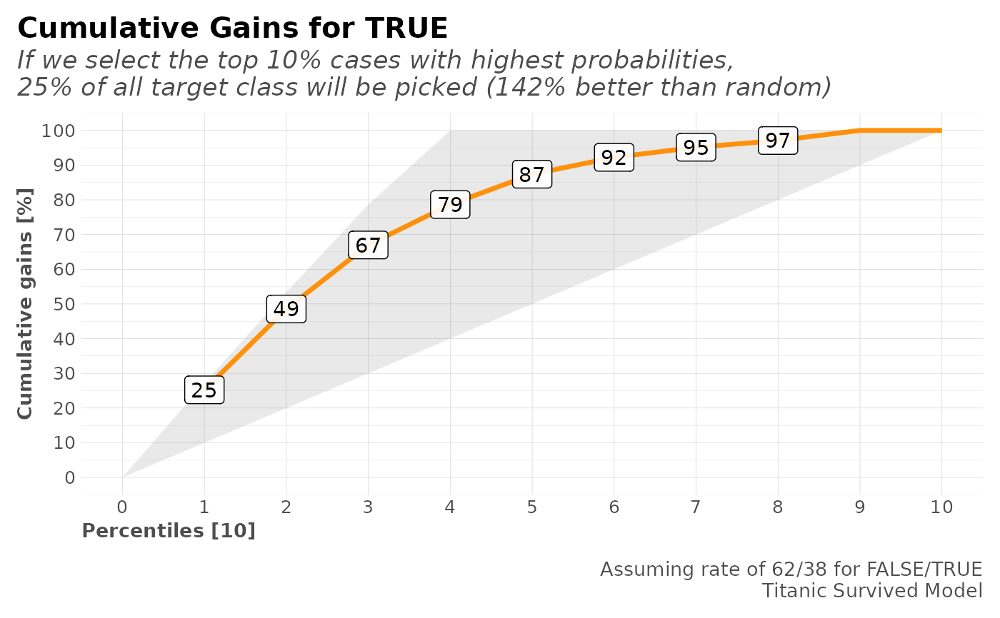

The cumulative gains plot, often named ‘gains plot’, helps us answer the question: When we apply the model and select the best X deciles, what expect to target? The cumulative gains chart shows the percentage of the overall number of cases in a given category "gained" by targeting a percentage of the total number of cases.
mplot_gain( tag, score, multis = NA, target = "auto", splits = 10, highlight = "auto", caption = NA, save = FALSE, subdir = NA, file_name = "viz_gain.png", quiet = FALSE )
| tag | Vector. Real known label |
|---|---|
| score | Vector. Predicted value or model's result |
| multis | Data.frame. Containing columns with each category score (only used when more than 2 categories coexist) |
| target | Value. Which is your target positive value? If set to 'auto', the target with largest mean(score) will be selected. Change the value to overwrite. Only works for binary classes |
| splits | Integer. Numer of quantiles to split the data |
| highlight | Character or Integer. Which split should be used for the automatic conclussion in the plot? Set to "auto" for best value, "none" to turn off or the number of split. |
| caption | Character. Caption to show in plot |
| save | Boolean. Save output plot into working directory |
| subdir | Character. Sub directory on which you wish to save the plot |
| file_name | Character. File name as you wish to save the plot |
| quiet | Boolean. Do not show message for auto target? |
Other ML Visualization:
mplot_conf(),
mplot_cuts_error(),
mplot_cuts(),
mplot_density(),
mplot_full(),
mplot_importance(),
mplot_lineal(),
mplot_metrics(),
mplot_response(),
mplot_roc(),
mplot_splits()
#> $class2 #> tag scores #> 1 TRUE 0.3155498 #> 2 TRUE 0.8747599 #> 3 TRUE 0.8952823 #> 4 FALSE 0.0436517 #> 5 TRUE 0.2196593 #> 6 FALSE 0.2816101 #> #> $class3 #> tag score n_1 n_2 n_3 #> 1 n_3 n_2 0.20343865 0.60825062 0.18831071 #> 2 n_2 n_3 0.17856154 0.07657769 0.74486071 #> 3 n_1 n_1 0.50516951 0.40168718 0.09314334 #> 4 n_3 n_2 0.30880713 0.39062151 0.30057135 #> 5 n_2 n_3 0.01956827 0.07069011 0.90974158 #> 6 n_2 n_3 0.07830017 0.15408720 0.76761264 #> #> $regr #> tag score #> 1 11.1333 21.52605 #> 2 30.0708 35.02605 #> 3 26.5500 14.84241 #> 4 31.2750 67.41018 #> 5 13.0000 28.95657 #> 6 26.0000 17.55153 #># Plot for Binomial Model mplot_gain(dfr$class2$tag, dfr$class2$scores, caption = "Titanic Survived Model", target = "FALSE")#>mplot_gain(dfr$class2$tag, dfr$class2$scores, caption = "Titanic Survived Model", target = "TRUE")#># Plot for Multi-Categorical Model mplot_gain(dfr$class3$tag, dfr$class3$score, multis = subset(dfr$class3, select = -c(tag, score)), caption = "Titanic Class Model")#>#>#>